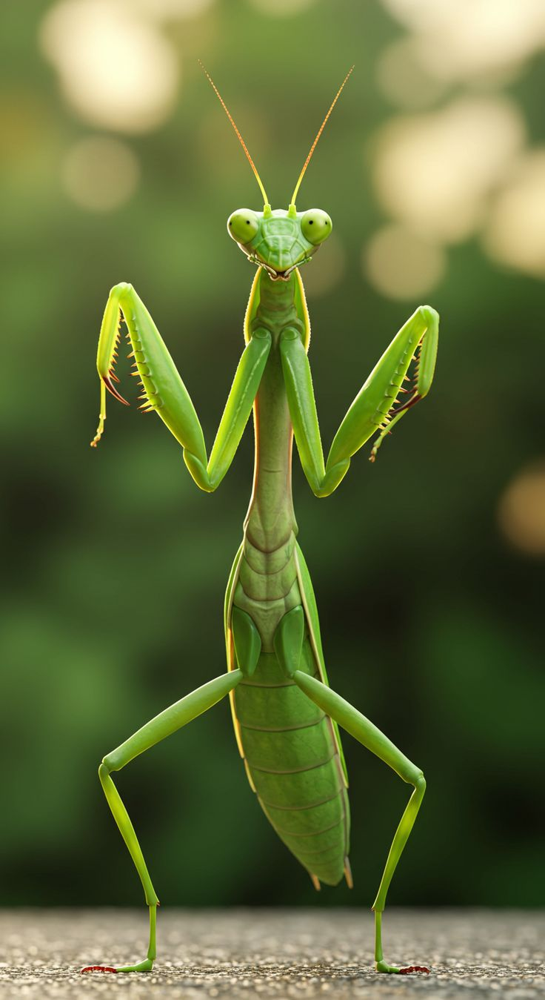
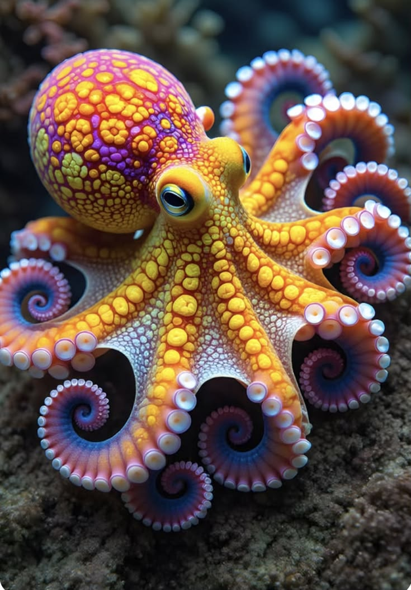
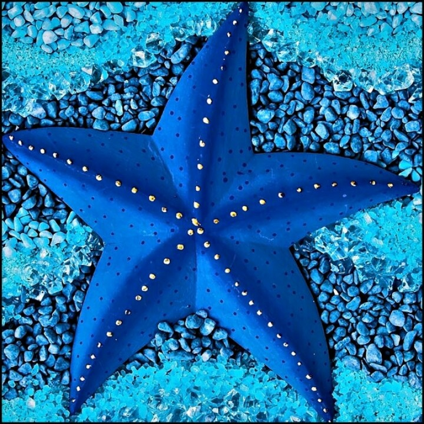
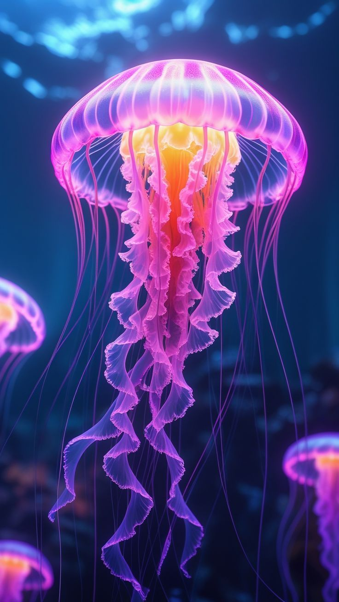
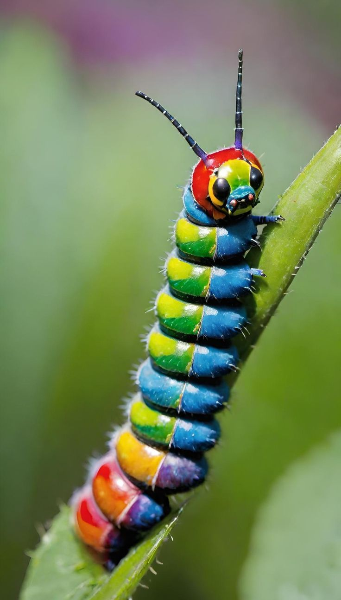

Ir directamente a: Insectos | Artrópodos | Moluscos
1. Artrópodos
Los artrópodos son animales invertebrados que se caracterizan por tener un exoesqueleto, un cuerpo segmentado y apéndices articulados. Incluyen a los insectos, arácnidos, crustáceos y miriápodos.

2. Moluscos
Los moluscos son animales invertebrados que se caracterizan por tener un cuerpo blando, a menudo protegido por una concha dura. Incluyen a los caracoles, almejas, pulpos y calamares.

3.Equinodernos
Los equinodermos son animales marinos que se caracterizan por su simetría radial y su esqueleto interno. Incluyen a las estrellas de mar, los erizos de mar y los pepinos de mar.

4.Medusas
Las medusas son animales marinos que pertenecen al phylum Cnidaria. Se caracterizan por su cuerpo gelatinoso y su forma de campana.

5.Gusanos
Los gusanos son animales invertebrados que se caracterizan por su cuerpo alargado y segmentado. Incluyen a los gusanos de tierra, los gusanos marinos y los gusanos de agua dulce.
